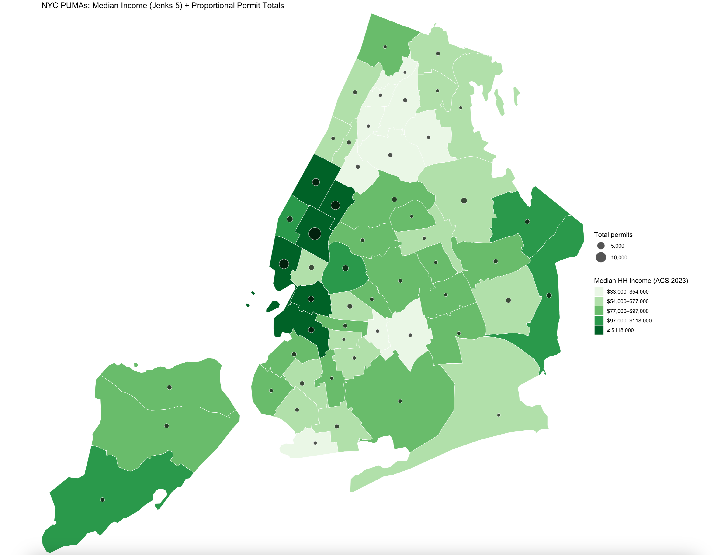

Class 7 Assignment: Spatial & Non-Spatial Operations in R | Building Permits Analysis in NYC.
Fall 2025 | Instructor: Stephen Metts | PGUD 5160 - CRN 2247
Preamble
In this seventh week’s assignment, we will utilize the scripting framework of the Class 7 Assignment Script to develop an R Markdown report that first spatially aligns NYC Department of Buildings (DOB) to building locations; proportionally maps ‘duplicating’ permits and finally correlates permit activity to median incomes reported at the NYC PUMA geographic units.
Follow the sequence of steps below to first orient to this week’s content: lecture, materials and weekly reading(s). Once complete, move along to first processing script #1 (only 1 script this week), then develop the R Markdown deliverable. The assignment deliverable is due Thursday, October 17th, 2025 at 11:59pm.
Week 7 Class 7 Materials:
Week 7 Class 7 Reading:
Next week’s quiz 7 will feature 5 multiple choice questions, and 5 True or False questions on the following online, accessible article:
This week’s assignment uses both spatial and non-spatial operations to read, transform, organize, analyze and map NYC Department of Buildings Permits tied to the building footprints (or rather ‘center’ of the buildings via the polygon ‘centroid’). While the assignment itself is highly technical, there are larger issues in the data - how it is collected, how it is distributed to the public and importantly how individual landlords and contractors operate within a very complex permitting process. This week’s reading is a critical lens on some of the contextual issues worth consideration - particularly what happens at the building level once construction begins. Pay attention to the following concepts and themes from the reading:
- Posting and notice practices
- Construction as harassment
- Tenant Protection Plans
- Job Number and permit detail transparency
At 7am Friday, October 17th, the seventh weekly quiz will open in Canvas. Utilize the posted Class 8 Agenda to gain the quiz access code which will be posted towards the beginning of the agenda. Expect 10 questions in total that cover the reading above.
Class 7 Assignment:
Step 1:
For this week’s assignment, we will set up a working directory afresh and download the ‘starter data’ into the /data directory.
The ‘starter data’ includes the following:
Create a new R project; utilize an Existing Directory and point it to the structured assignment_7 folder that you create:

Run the standard getwd() before beginning assignment_7, ensuring you are within the newly created assignment_7 project directory.
Also, utilize the list.files() function to show all data paths and documents;
Like previous assignments, we will again be adapting and delivering a R Markdown File as the assignment_7 deliverable.
Step 2:
To start working on assignment_7, download the assignment script #1 and place into the /scripts subdirectory:
Once the necessary data is organized and the assignment script is loaded, we will first read in the DOB permits .csv and the buildings centroids shapefile. The DOB permits in its raw form is a very large dataset; in order to speed processing and also produce a meaningful analysis period, the data has been subset to just those permits that have an approved filing status as of 01/01/25. In other words, we are working with ‘to-date’ data in the past year.
NYC also maintains a buildings footprint dataset for every building in the city. Note that this is not the MapPLUTO file; buildings themselves sit atop the MapPLUTO files. As there are so many building footprints across the 5 boroughs, we revert to the ‘center’ point - the centroid - which is easier on memory and will allow us to map the permits in a meaningful way.
Once we are able to map our building permits, we will also map the data against the Median Income ACS variable we have used in past classes; and follow this mapping with a correlative plot to see the relationship between median income and permits. We will use the PUMA geographic unit for these analyses products later in the assignment.
- Read in both permits and building centroids:
Step 3:
Next, we need to standardize the bin column for both the permits data and the building centroids data. We need to do this in anticipation of the first ‘non-spatial’ table join between the permits and the building points. The bin number is described as follows:
- Key Aspects of a NYC Building Identification Number (BIN):
- Purpose: BINs are used to uniquely identify each building in New York City for tracking building-related data, permits, violations, and applications.
- Format: It is a seven-digit number where the first digit represents the borough code.
- Uniqueness: Each BIN is unique to a specific building and permanent, except to correct assignment errors.
- Discovery: You can find a building’s BIN on its certificate of occupancy; you can also find it online via several DOB permit endpoints.
# --- 2) Standardize BIN columns/types on both datasets ---
# building_centroids is an sf POINT with numeric column 'bin'
cent_sf <- building_centroids %>%
mutate(bin = as.integer(bin)) %>% # coerce numeric → integer
filter(!is.na(bin)) %>%
group_by(bin) %>% slice(1) %>% ungroup() # ensure 1 centroid per BIN
# --- standardize BIN in permits (create a clean 'bin' column without rename) ---
nm <- names(permits_tbl); nml <- tolower(nm)
bin_idx <- which(nm == "Bin" | nml == "bin")[1]
stopifnot(!is.na(bin_idx))
permits_tbl$bin <- as.integer(permits_tbl[[nm[bin_idx]]])
permits_tbl <- permits_tbl %>% filter(!is.na(bin))Step 4:
This step is very important; here we actually join the permits data to the buildings point geometry:
# --- ONE-TO-MANY join ---
permits_centroids_sf <- dplyr::inner_join(cent_sf, permits_tbl, by = "bin")Here we are creating a new object permits_centroids_sf using the inner_join function on the bin variable that exists in both the permits and the building points:
In R, an inner join is a type of data merging operation that combines two data frames based on common values in a specified key column (or columns). It returns a new data frame containing only the rows where there is a match in the key column(s) in both of the original data frames.
Further we are performing a ‘one-to-many’ version of the join:
An inner join in R can and frequently does produce a one-to-many join. When a row in one data frame matches multiple rows in the other data frame, the inner_join() function returns all possible combinations of the matches.
Once we create the join, we run a few QA prints to ensure that the join has happened and what are the count results of the join. Based on the QA results, we see that we lose about 15% of the original permits in the join process. This can happen for a variety of reasons:
- permits rows: 129,285
- joined rows: 110,357
- 18,928 permits (≈14.6%) have a Bin not present in the centroid layer, and thus they are dropped.
Potential Reasons:
- Missing/placeholder BINs in permits (NA, 0).
- Temporary/retired BINs (often 2nd digit 8 or 9) that aren’t in the centroid vintage.
- Coverage/vintage mismatch: the BES centroid file predates some buildings in DOB NOW (new buildings, recent conversions).
- Non-building permits: some work types use a BIN that isn’t represented in the “building centroids” product.
- Type/format quirks: a few BINs read as doubles/strings with weird characters.
With the loss acknowledged (and acceptable as we are trying to get a city-wide pattern understanding, not neighborhood-specific ‘deep-dive’), we can move along counting permits within buildings as many individual buildings indeed contain many permits. We can do this through the count() function.
Once complete, we will have an object named multi_centroids_sf that we pass to both ggplot and tmap for the mapping of the permits using a proportional symbol approach.
Step 5:
Moving along to the initial mapping, we can use ggplot to get an overall understanding of the concentration of building permits. Not suprisingly, a bulk of activity takes place in mid-town Manhattan. However, we can also see cluster in other locations throughout the greater NYC region.
Next, with the interactivity of tmap, we can explore in greater detail the various cluster and even individual buildings across the region. We can click on mapped points and gain access to the variables held in the multi_centroids_sf object - the linked permits to building centroids object that we have created upstream in the script.
Step 6:
Next we will return to choropleth mapping with tidycensus to get a comparative variable to better understand the spatial pattern of the permits data. We can assume that where there is economic incentive and activity, that is where redevelopment and development activity will also occur. We need to keep in mind that your permits data is very rich in terms of the type of permits, their purposes and their dollar amounts. Some permits are relatively minor whereas others are multi-year endeavors in the millions of dollars. But at the scale at which we are mapping - the greater NYC region - we can do a first pass to see the overall pattern of economic activity and permits.
As we have in the past, we’ll utilize the Median Income variable via a tidycensus pull. Arguably we could develop a series of variables or even a better variable to gauge economic activity, but we’ll use Medain Income as a rough indicator here.
To start, we make our tidycensus pull for PUMAs and the B19013_001 variable. We’ll then subset to just those PUMAs in our target 5 borough geography. To do this, we are using a spatial operation to create a single spatial object, and then check to ensure all the parts are indeed in the target 5 borough geography.
st_union() dissolves those five county polygons into a single (multi)polygon representing the NYC boundary—handy for spatial filtering/clipping other layers to NYC.
Next, we create a new, reprojected object pumas_2263 <- st_transform(pumas_nyc, 2263) using the EPSG: 2263 CRS as the target CRS.
We then move along to calculating areal attributes for the object pumas_2263 - we also did this in the lab. We also make sure that multi_centroids_sf is also reprojected to EPSG: 2263. Next, we generate an object permit_counts that stores the permits intersecting with the PUMAs; we then are able to derive a rate of permits per PUMAs.
Next we create the object pumas_enriched adding through the mutate function from tidyverse new variables for absolute count of permits and the rate of permits as permits_per_sqmi. We then print to the Console these statistics:
# ---- Console summary: totals + overall rate + top 5 by rate ----
total_permits <- sum(pumas_enriched$permits_total, na.rm = TRUE)
total_area_mi2 <- sum(pumas_enriched$area_mi2, na.rm = TRUE)
overall_rate <- if (total_area_mi2 > 0) total_permits / total_area_mi2 else NA_real_
message(sprintf("Total permits counted across NYC PUMAs: %s",
formatC(total_permits, format = "d", big.mark = ",")))
message(sprintf("Overall permits per square mile (citywide): %.2f", overall_rate))In your `.Rmd writeup this week, certainly include these statistics in your discussion of the pattern of the building permits data.
Finally, we build out the parameters for the final ggplot multivariable choropleth map where the choropleth colors represent median income and the proportional symbols represent the number of permits per PUMA:

Its hard to argue that there isn’t a spatial correlation between the two variables (think mid-town Manhattan as the cluster that proves the rule here). In the next step, we can test this relationship further.
Step 7:
In this final step, we conclude our exploration of the spatial dimension of the permits data but reverting back to a scatterplot to view the dimensions of the two variables of interest - median income and number of permits. Keep in mind we are not controlling for size differences in the PUMAs - we did that via our earlier rates - but as we saw in the mapping, there’s a clear trend in the absolute count of permits as much as in the rates.
We first build a new, clean object and simply call it df and pass it to ggplot for the final plotting named gg_corr. The direction and strength of the relationship between median income and permit frequency indeed appears positive and strong.
Step 8:
As we have progressed through this week’s script, we have created a fair number of objects and related plots and Console statistics. Certainly utilize these in your assignment .Rmd submission. To follow are some example RDS object code chunks for saving to the /results subdirectory. These can be brought into your assignment .Rmd for the final submission.
- At line #87, we print the first plot
gg_permit_plot; this can be saved as follows:
# save your resulting gg_permit_plot as an RDS object
saveRDS(gg_permit_plot, file = "~/Desktop/assignment_7/results/gg_permit_plot.rds")- At line #239, we print a choropleth plot
gg_pumas_plot; this can be saved as follows:
# save your resulting gg_pumas_plot as an RDS object
saveRDS(gg_pumas_plot, file = "~/Desktop/assignment_7/results/gg_pumas_plot.rds")At line #268, we print the scatterplot for the relationship Median household income to Number of Permits Per PUMA; this can be saved as follows:
# save your resulting gg_corr_plot as an RDS object
saveRDS(gg_corr_plot, file = "~/Desktop/assignment_7/results/gg_corr_plot.rds")In the end, you could have 3 new .rds files located in the /results subdirectory:
.rds objects prior to working in assignment_7 .RmdIf you would also like to add images from your tmap interactive map, the best approach is not to embed the interactive map itself as an object, but rather export still images of the map as .png and also save those in your /results subdirectory, to then be called from your .Rmd file.
savingtmapouttakes as.pngfiles via Plot interfaceClass 7 Assignment - Develop .Rmd Submission
From within your assignment_7 project, navigate to the docs folder. This is the location in which you will first download the example R Markdown file (.Rmd), and open it anew in your project. Alternatively, you can create your own R Markdown file, but the download version has some formatting set up that can be a helpful start point (as was the case for previous assignment starter .Rmd files).
To open an existing R Markdown file:
File > Open File > assignment_7 > docs > assignment_6.Rmd
To create your own R Markdown file:
File > New File > R Markdown
Next, loading, working with and saving data in the Console is NOT the same as loading, displaying and plotting data in an .Rmd file. Keep in mind that the Console is the iterative, working environment, whereas .Rmd is designed for publishing and sharing your analysis results.
So, the first step following the completion of accessing, transformation, plotting and saving both the frequency table and the land use map as .rds objects is to load them within the .Rmd environment.
We load the data as follows from within the .Rmd document. Utilize the green run button to the far right of the code block to execute the code:
# Load the saved ggplot object
gg_permit_plot <- readRDS("~/Desktop/assignment_7/results/gg_permit_plot.rds")
# Display the loaded plot
print(gg_permit_plot)# Load the saved ggplot object
gg_pumas_plot <- readRDS("~/Desktop/assignment_7/results/gg_pumas_plot.rds")
# Display the loaded plot
print(gg_pumas_plot)# Load the saved ggplot object
gg_corr_plot <- readRDS("~/Desktop/assignment_7/results/gg_corr_plot.rds")
# Display the loaded plot
print(gg_corr_plot)A placeholder code chunk for each of these sections is located in the starter .Rmd, as well as code chunk for incorporating an .png file.
Make sure to load in your required libraries at the top of the script.
As you finalize your code and bring it into your .Rmd submission document, all components - the libraries, the data object and the plotting code - need to exist in the .Rmd environment as it operates separate of your Console environment.
For your contextual writing and observations consider the following prompts:
- Describe the overall pattern of the permits data. Did you find any components of the larger pattern that were surprising?
- Research a portion of the overall pattern, particularly with the
tmapinteractive map. Are there particular buildings or sections of the city that surprised you? - Incorporate discussion of the Rate and Count statistics that were printed to the Console. Did any of these either underscore the larger pattern of the data; or break from that pattern in any significant way?
The assignment 7 submission is due to Canvas on Thursday, October 16th, 2025 at 11:59pm. The format can and should be an .html document format generated from your Rmd document; or a .pdf document.
Note that when you knit your output, the .Rmd should not be removed; that is, keep it in your assignment folder in addition to the final .html or .pdf submission.
The Assignment 7 R Markdown deliverable is due to Canvas on Thursday, October 16th, 2025 at 11:59pm.